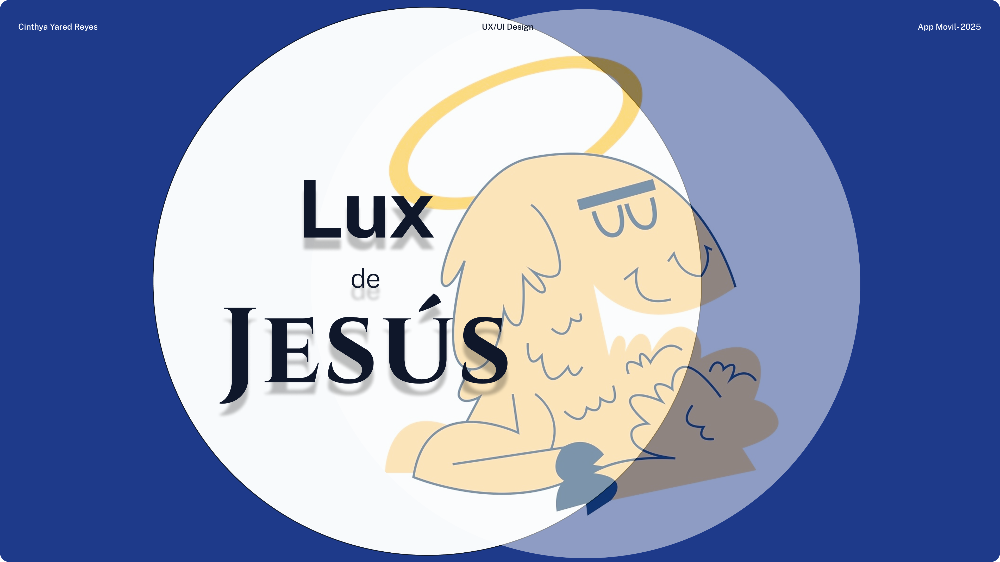

Lux de Jesus
App educativa de fe: diseño UX/UI desde la investigación hasta el prototipo.
Ver casoDiseñadora UI y UX Researcher Mexicana. Investigo, prototipo y pongo a prueba experiencias digitales centradas en las personas.
Un poco sobre mí
Soy Cinthya, diseñadora UX/UI con enfoque en investigación metodológica. Mi proceso combina benchmarking, pruebas de usabilidad y prototipado para tomar decisiones de diseño con evidencia.
Aquí hacemos las cosas bien, sino, mejor no las hacemos.